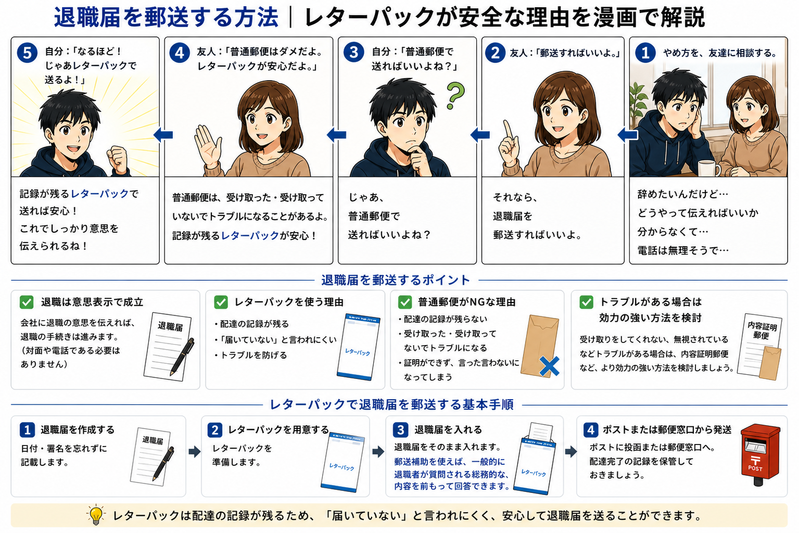

退職届を郵送する方法｜電話せず辞めるやめ方を漫画で解説
退職届を郵送する方法を、漫画でわかりやすく解説します。 電話で伝えるのが難しい場合でも、書面で退職の意思を伝える方法があります。

退職届をまだ作っていない方はこちら
退職届を作成する退職届を郵送する方法
退職届は、対面や電話だけでなく、郵送で提出する方法もあります。 直接話すのが難しい場合は、退職届を作成し、会社宛に郵送する形を検討できます。
レターパックを使う理由
- 配達の記録が残る
- 受け取った・受け取っていないのトラブルを避けやすい
- 送り状ナンバーで配達状況を確認できる
レターパックで送る場合は、送り状ナンバーを必ず控えておきましょう。
トラブルがある場合
すでに受け取り拒否や無視などの不安がある場合は、 より効力の強い方法を検討してください。
郵送補助を使う場合
郵送補助を使えば、一般的に退職者が質問される総務的な内容を、 前もって整理できます。
まずは退職届を作成してください
退職届を作成する